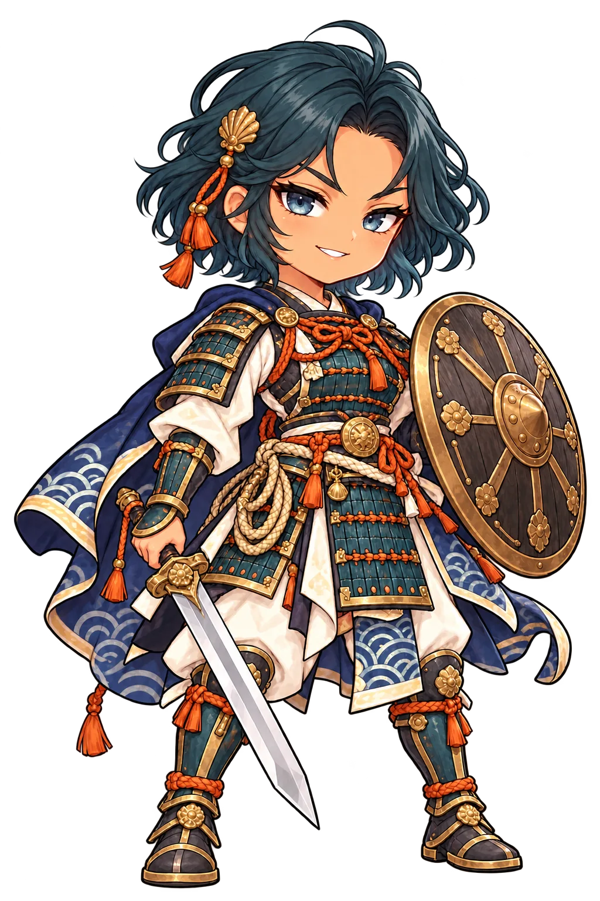

<!doctype html><html lang="ko"><meta charset="utf-8"><meta name="viewport" content="width=device-width,initial-scale=1"><title>왜국 장군 3종 원화 비교</title><style>body{margin:0;background:#f9edd1;color:#50341d;font-family:sans-serif}header{padding:14px 28px;border-bottom:1px solid #bb974c}h1{margin:0;font-size:23px}section{display:grid;grid-template-columns:150px repeat(3,1fr);align-items:center;border-bottom:1px solid #c9aa6e;padding:12px 24px;gap:16px}h2{font-size:19px}figure{margin:0;text-align:center;background:#fffaf0;border:1px solid #caaa66;border-radius:10px;padding:7px}img{height:210px;max-width:100%;object-fit:contain}figcaption{font-size:15px;margin-top:4px}@media(max-width:700px){section{grid-template-columns:1fr 1fr 1fr;padding:10px;gap:6px}h2{grid-column:1/-1;margin:0}img{height:150px}figcaption{font-size:12px}}</style><header><h1>왜국 장군 · 원화 용도별 비교</h1></header><section><h2>아베노 히라후</h2><figure><figcaption>캐릭터 원화 · 어깨 초상</figcaption></figure><figure><figcaption>출진 원화 · 정면 기본자세</figcaption></figure><figure><figcaption>장수정보 원화 · 별도 자세</figcaption></figure></section><section><h2>가미쓰케노 와카코</h2><figure><figcaption>캐릭터 원화 · 어깨 초상</figcaption></figure><figure><figcaption>출진 원화 · 정면 기본자세</figcaption></figure><figure><figcaption>장수정보 원화 · 별도 자세</figcaption></figure></section><section><h2>하타노 다쿠쓰</h2><figure><figcaption>캐릭터 원화 · 어깨 초상</figcaption></figure><figure><figcaption>출진 원화 · 정면 기본자세</figcaption></figure><figure><figcaption>장수정보 원화 · 별도 자세</figcaption></figure></section></html>